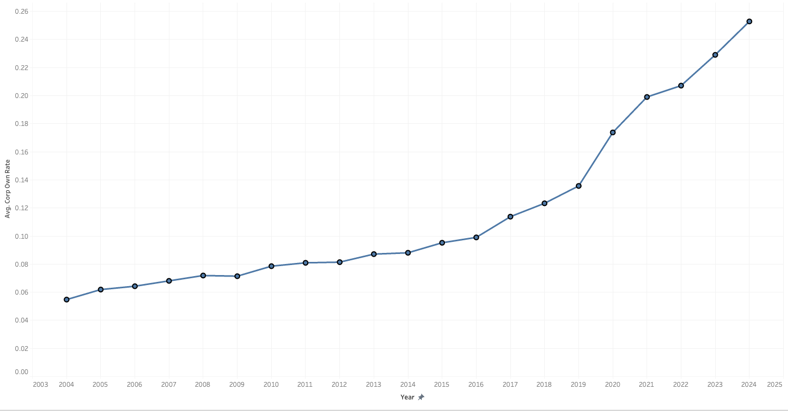
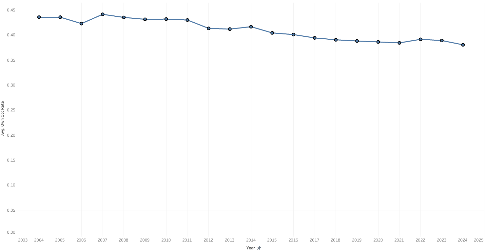
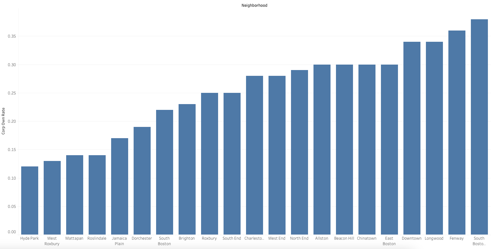
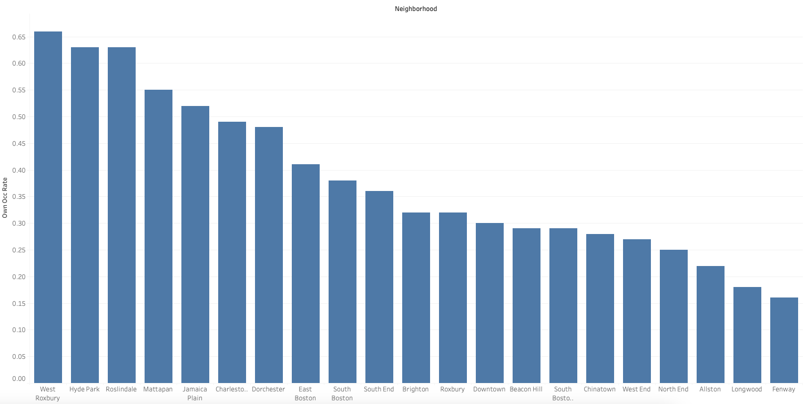
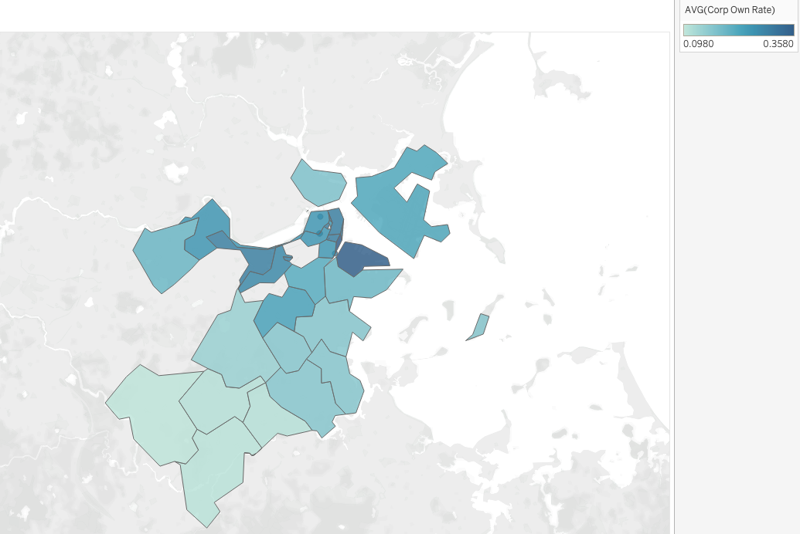
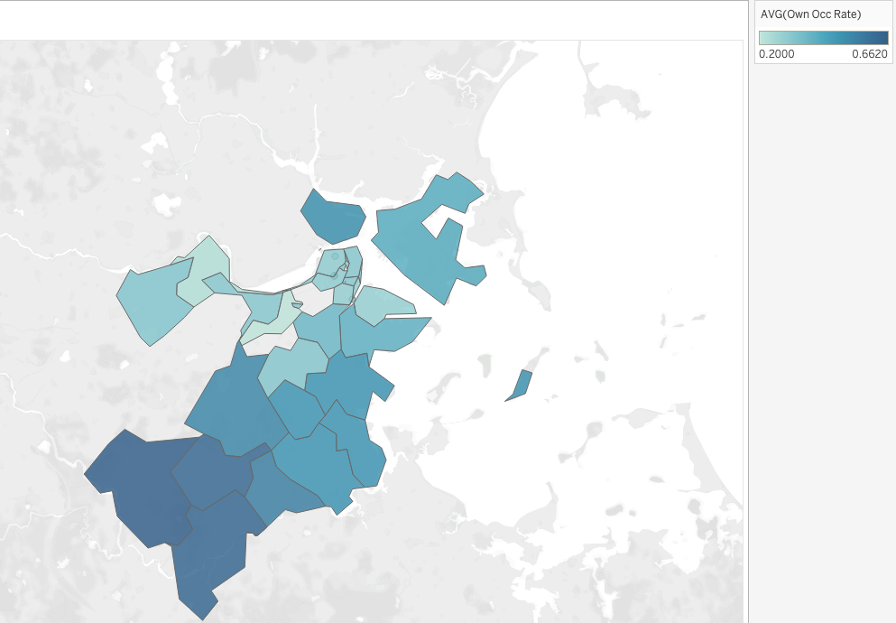
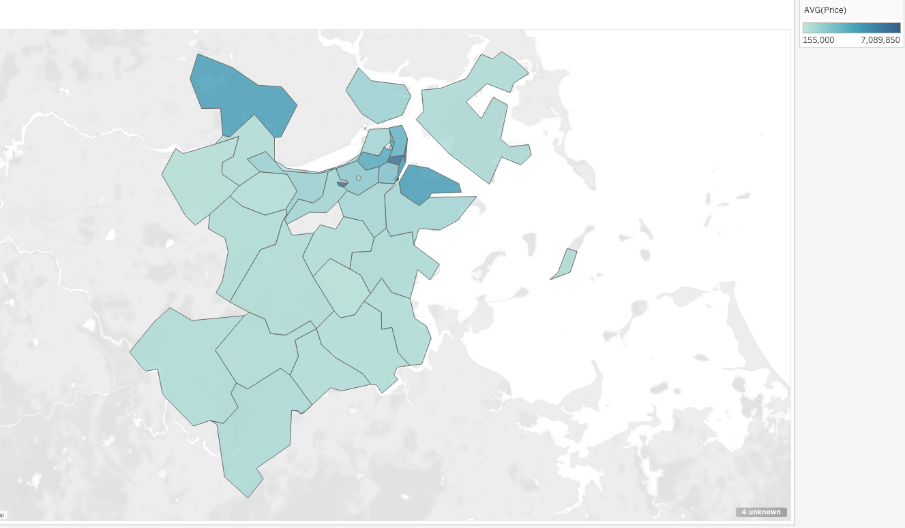
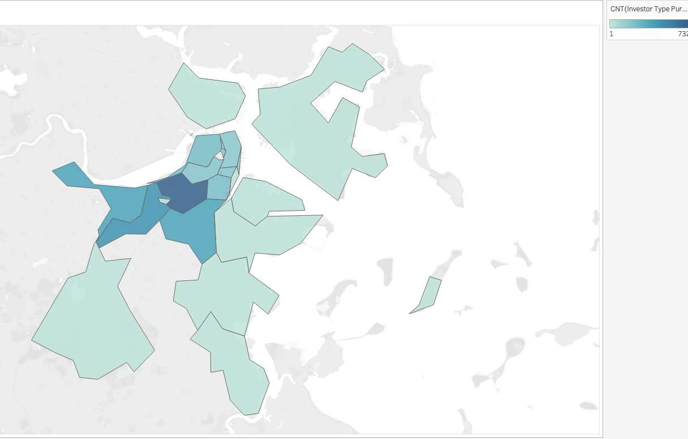
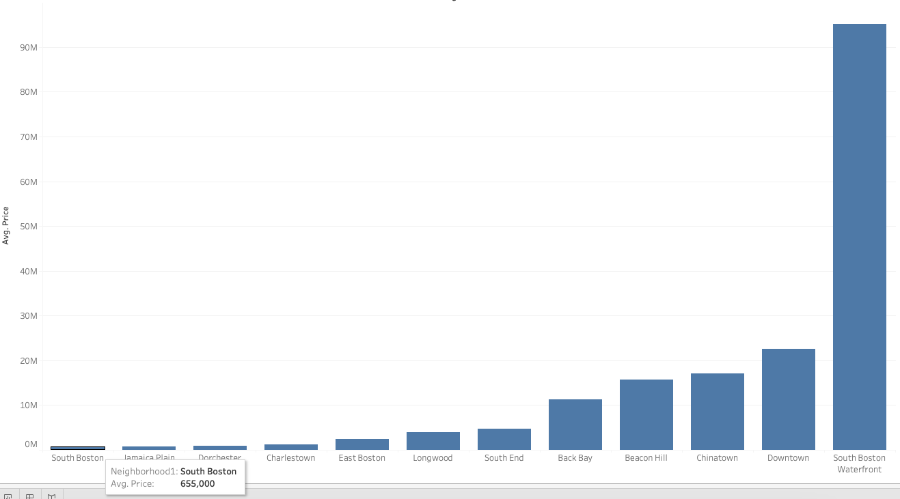

Subtheme: Speculation
I noticed that there are a lot of houses and apartments in Boston owned by corporation or private investors. I would like to dig into the data and understand more about this phenomonon and see how it impacts housing affordability.
Dataset
I used the two datasets below for my initial data exploration and analysis:
- Corporate Ownership Rates and Owner Occupancy Rates in Boston Neighborhoods, 2004-2024 – Rates of corporate ownership and owner occupancy by neighborhood in the City of Boston over 20 years. With this data, you can see which neighborhoods might be experiencing more corporations buying up properties and/or more absentee owners also buying up properties.
- Residential Sales Data in the City of Boston, 2000-2023 – All residential sales transactions in the City of Boston between 2000-2023. Includes information about seller, buyer, price, location, whether the sale constitutes a “flip,” and much more.
Overall Analysis Questions
- How has corporate ownership changed in the Greater Boston area?
- How has owner occupancy changed in the Greater Boston area?
- Which neighborhoods have more corporate owners?
- Which neighborhoods have lower owner occupancy (i.e. more absentee owners)?
- What is the average house price in different neighborhoods in the Greater Boston area?
- What price ranges of houses do corporate owners prefer?
Discoveries & Insights









Summary
Through this initial data exploration and analysis, I understand that the corporate ownership rate has been increasing over the years while the owner occupancy rate is decreasing. When we visualize this data on a map, we can see that the closer we are to the Boston city center, the more absentee owners there are (including corporations or other investors/non-owners). I also observed that the price gap between neighborhoods is very large; the most expensive can have an average of $7 million, while the lowest can have an average of several hundred thousand dollars. I also found that large investors and corporations prefer to buy more expensive houses than average. For example, the average housing price in South Boston Waterfront is $7 million, but the average price of the houses that large investors and corporations bought almost reaches $100 million. I think this initial data exploration helped me gain a better understanding of the current status of the Boston housing market and can better frame the research question for the final project.